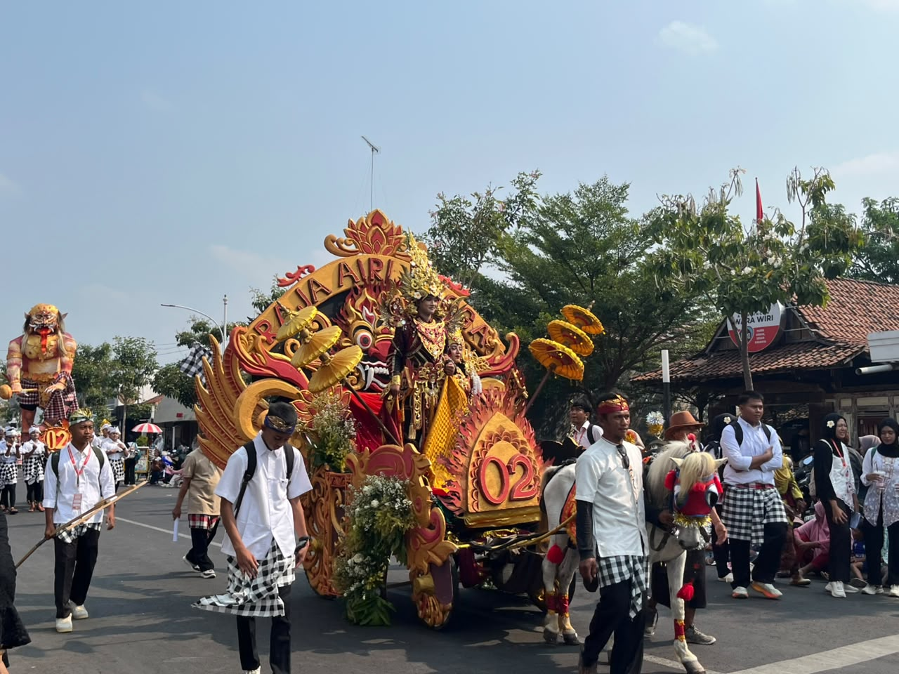

Nganjuk, 15 Agustus 2026 — Dalam rangka memperingati Hari Ulang Tahun (HUT) ke-81 Kemerdekaan Republik Indonesia, masyarakat Kabupaten Nganjuk menggelar karnaval pawai budaya pada Sabtu, 15 Agustus 2026. Kegiatan tersebut berlangsung meriah di sepanjang Jalan A. Yani, Nganjuk, dan mendapat antusiasme yang tinggi dari masyarakat. Karnaval pawai budaya diikuti oleh berbagai kalangan, mulai dari anak-anak, pelajar, hingga masyarakat umum. Para peserta tampil dengan mengenakan berbagai pakaian adat dan kostum yang menarik. Selain itu, terdapat pula berbagai hiasan, properti, serta penampilan seni dan budaya yang menambah kemeriahan acara. Sepanjang Jalan A. Yani dipenuhi oleh masyarakat yang datang untuk menyaksikan jalannya pawai. Para peserta berjalan mengikuti rute yang telah ditentukan sambil menampilkan berbagai kreativitas. Masyarakat juga turut mengabadikan momen tersebut melalui foto dan video. Kegiatan karnaval ini diselenggarakan sebagai salah satu bentuk perayaan kemerdekaan sekaligus untuk melestarikan dan memperkenalkan keberagaman budaya Indonesia kepada masyarakat, khususnya generasi muda. Berbagai budaya yang ditampilkan menjadi gambaran bahwa Indonesia memiliki kekayaan tradisi yang sangat beragam. Selain sebagai hiburan, pawai budaya juga menjadi sarana untuk mempererat kebersamaan dan menumbuhkan rasa nasionalisme masyarakat. Masyarakat dari berbagai kalangan dapat berkumpul dan menikmati kemeriahan perayaan HUT ke-81 Kemerdekaan RI bersama-sama. Karnaval pawai budaya di Jalan A. Yani, Nganjuk, menjadi salah satu kegiatan yang menunjukkan semangat masyarakat dalam menyambut Hari Kemerdekaan. Dengan adanya kegiatan seperti ini, diharapkan rasa cinta terhadap budaya Indonesia dan semangat persatuan dapat terus tumbuh di tengah masyarakat.
